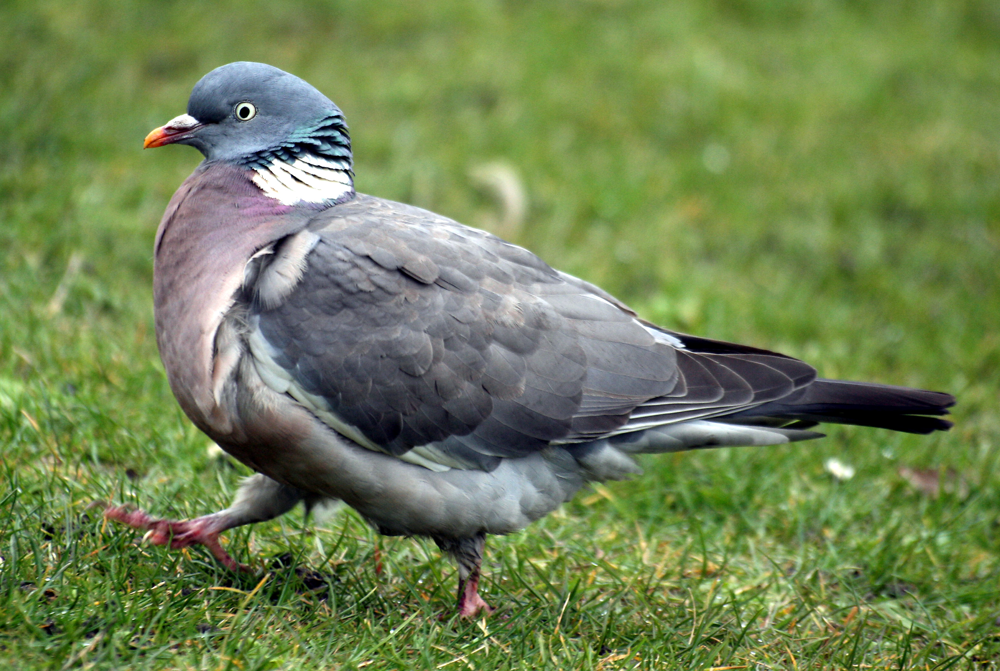

Rubrik eller något änna

När jag vill ha en bild inuti min hemsida så använder jag img "image" sedan använder jag src "source" vilket behövs så man kan sända in en bild länk. Efter det använder jag alt, och det beskriver vad bilder är om bilden inte fungerar på en viss browser. Till sist använder jag width, där kan man ändra storleken på din bild i bredd.